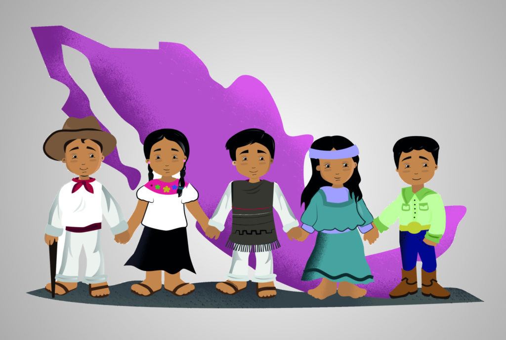
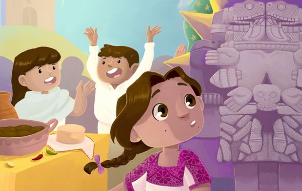
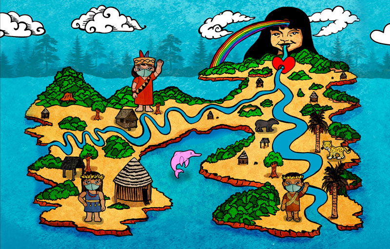

En México hay 16.933.283 indígenas, que representan el 15,1% de la población total.


México ha adoptado la Convención de Naciones Unidas sobre
los Derechos de los Pueblos Indígenas y es una nación pluriculural desde 1992.
Sin embargo, la población indígena del país se sigue enfrentando a numerosos desafíos.
Los pueblos indígenas tienen una relación especial con la tierra en la viven desde hace generaciones; en ocasiones, desde hace decenas de miles de años.
